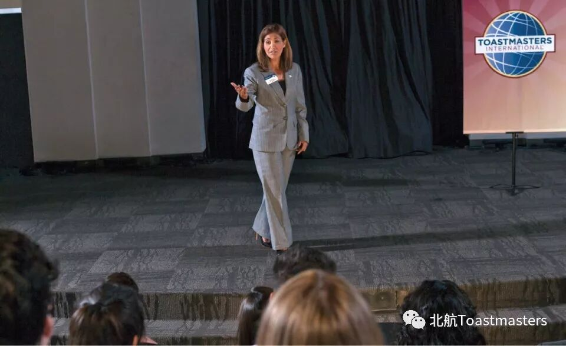

Time: 19:30-21:00, Friday, 23th March
Venue: Room A218, New Main Building, Beihang University
Table Topic
Theme: Courage
Table Topics Master: Star
Table Topics Evaluator: Elsa from Athena TMC
Most people feel nervous when they give a public speech, and this bad phenomenon usually results from lack of courefage. Therore, In order to perfom better during our international speech contest, let us talk about how to build up our courage firstly!
International Speech Contest

Contest Chair:Frank
Judge Group: leaded by Jason
Contestants: Cyril、Claire Gong、kaisense、Samuel
Let us look forward to their wonderful performance !
BeihangToastmasters Club is a students' union. At the same time, we belong to a non-profit international organization calledToastmasters International.
Toastmasters International (TI) is a non-profit educational organization that operates clubs worldwide for the purpose of helping members improve their communication, public speaking, and leadership skills.You can find us by the following map of Beihang University.

https://mp.weixin.qq.com/s/pXiqJBKVWqEFue6BOIMueA
本页为抢救式本地归档，图文已永久保存。